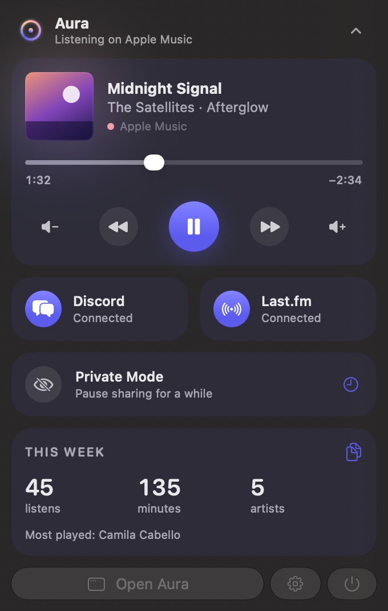
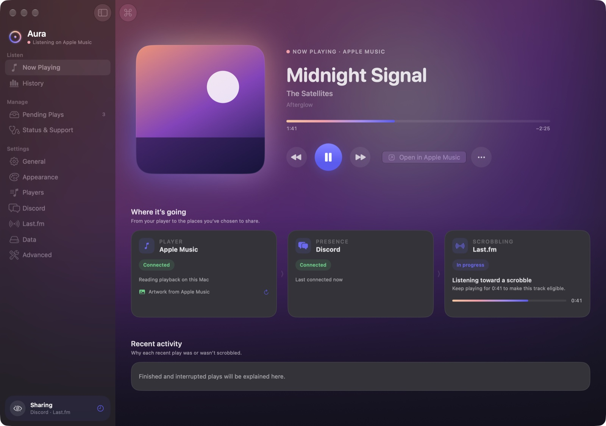

Lives in your menu bar
Playback controls, Discord and Last.fm switches, Private Mode, and this week’s recap — one click from anywhere.

Aura 2.0 for macOS · Free and open source
Aura carries the track you’re playing into Discord and Last.fm — from one private-by-default Mac app that never asks you to make an account.
Requires macOS 15 or later

How it works
Aura reads what’s playing on your Mac and carries it forward — only where you’ve switched it on.
Player
Apple Music, Spotify, YouTube Music through YTMDesktop, and best-effort TIDAL. No plugins, no browser extension.
Presence
Rich Presence with reliable cover art, your choice of lines, timers, images, and a listening link.
Scrobbling
Only qualified listens are scrobbled, and anything Last.fm can’t take right away waits and retries instead of disappearing.
Features
Aura runs in the background and stays out of the way until you want it.
Playback controls, Discord and Last.fm switches, Private Mode, and this week’s recap — one click from anywhere.

Pause Discord and Last.fm for fifteen minutes, an hour, or until you’re back. Your history stays on your Mac either way.
Local insights, top artists, busiest hours, and a weekly recap you can share — calculated on your Mac, never uploaded.
Pick one for light mode and another for dark. Aura switches with your Mac.
When Last.fm is down, finished plays wait in Pending Plays and retry on their own. If one is rejected, fix the details and send it again.
Privacy
Aura runs on your Mac. You decide what leaves it, and when.
Aura never asks you to create an account or connect to a server of its own.
Your Last.fm credentials and session token are kept in an owner-only local file.
Discord and Last.fm stay off until you switch them on, and Private Mode is always one click away.
Version 2.0
PresenceFM is now Aura — rebuilt around a single luminous halo, with an iPhone companion, stronger queue recovery, and one shared vocabulary for scrobble status across both apps.
Production
Published as the Latest release on GitHub, powers in-app updates through a signed appcast.xml, and ships with a .sha256 to verify your download.
Pre-release
Tagged vX.Y.Z-beta.N or vX.Y.Z-rc.N. They never replace Latest or touch the production update feed.
Open source. No account. All on your Mac.
Releases are ad-hoc signed, so the first launch uses Control-click → Open.